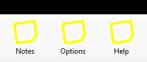
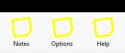

Developer Diary
CESNote.com is still in development, follow the progress of the software here.
Day 31 : 5th May 2008
Getting ready for CESNote.com Compact Beta 1, this should be online today! With a month break, main development begins again, start on CESNote.com Standard will begin once Beta 2 is complete this will add the Help and Options features and the rest of CESNote.com Compact's functions. Beta 2 is due 6th June 2008, the same time as Beta 1 for CESNote.com Standard, keep an eye on this diary and the website for more details and information soon!
Day 30 : 4th April 2008
CESNote.com Website Launched with information about CESNote.com Compact included, and within the Support section the option to sign-up for the Beta program starting next month on 5th May for CESNote.com Compact, and addition of all the diary entries to the website including this one.
Day 29 : 3rd April 2008
Work on the options dialog for the selection of the Glass style worked on with the drop down list implemented, also work on the Main interface to prepare it for the customisation options available in the Options dialog, including making the drawing of the caption buttons which appear on the window such as Close and Minimise more efficient and allowing for the enhancements which CESNote.com Standard and Premiere will have with regards to these buttons and the main user interface as a whole.
Day 28 : 2nd April 2008
Minor work on the new options system including basic implementation of the dialogs, and planning of options, main work on the new CESNote.com website completed, plus design and planning of what help system will be like and how it will work.
Day 27 : 1st April 2008
All Notes now finalised, initial work on the Options dialog started, plus some cleanup and finalisation of the Note "Manager" with new icons on the Tabs plus combination of Open and Favourites with Filter options included already. Code checking and functionality improvement started. Outstanding tasks are completion of the Manager, creation of Options system and Help system, once these are complete main work on CESNote.com Compact will be completed, and work begins on CESNote.com Standard. Plus work on the new CESNote.com website to be launched on 4th April 2008 started.
Day 26 : 31st March 2008
With Scheduler mainly complete, work on the Notes can continue including implementation of all remaining note features - this has been completed for Desktop, Doodle and Task notes with Photo note also completed but some additional functionality may be added. All the notes ready for testing, completion work on the Notes Manager and the Main interface will be done after this, with start on the Options system and Options dialog the next main item to implement, and then the Help system and dialog to be done last. Work on Manager to improve and add functionality including ability to see the Notes that are currently open.
Day 25 : 30th March 2008
Scheduler event triggers work now, the Scheduler uses a Background Worker Process to run the Scheduled tasks, this will help performance, the main scheduler component just needs refined and testing. Other notes to be implemented before this though, Completion of the Desktop Note to be done first.
Day 24 : 29th March 2008
Scheduler event triggers have now been implemented as has the basic UI in the Manager, events are triggered and this works, only one issue is launching the notes when triggered which is still to be worked on, the main developer road map is also being planned the provisional dates are as follows: 4th April 2008 - CESNote.com website is relaunched. 5th May 2008 - CESNote.com Compact Beta Release, 6th June 2008 - CESNote.com Standard Beta Release, 7th July 2008 - CESNote.com Premiere Beta Release. Then the big one hidden right here in the diary - makes sense to have it here, is release date: 8th August 2008 for CESNote.com Compact and Standard plus Premiere (without online services). Main thing is to resolve issue with cross-threading, once this is resolved the scheduler will be complete.
Day 23 : 28th March 2008
Work on the Alert Scheduler begun with implementation of the basic functionality and operation of this, the Scheduler for the Alerts will work in the same way as the Note Restore function, using a list of the notes with set alerts then showing them when the alert is triggered.
Day 22 : 27th March 2008
Alert functionality progressed, Alert dialog implemented fully plus alert set and read functions created, next main task for the Alert feature is the Scheduler to actually manage and alerts, this will be very similar to the note restore feature, but instead of the notes appearing at launch of the software they appear when scheduled via their Alert settings, with the option to see the Alerts via the Notes Manager.
Day 21 : 26th March 2008
Printing functionality now fully implemented on the Desktop Note, more testing required however all code for this is in place, started work on the Alert functionality and Alert set Dialog began, dialog is alreday completed and alert data setting / reading to be implemented and tested.
Day 20 : 25th March 2008
Work on the other aspects of Comentsys took longer than expected howevr this is now completed, work on the notes to complete all their functions begins, starting with the Desktop Note - all of the functions will be implemented and completed, then repeated for the other notes so they are fully completed. Main functions and formatting on the Desktop Note are the first priority with the font styles, colours and alignment. The Desktop Note development has gone well, testing on all the features of this note, minor change required to the printing functionality, all notes will have to have print preview and print as the same option may only need the one button for this. All formatting has been implemented, this needs to be fully completed. Desktop Note should be finished soon with all it's functionality, ready for the next note to be completed : Doodle Note, however the Alert feature will be implemented inbetween so all functionality required by all the notes except help will have been completed.
Day 19 : 9th March 2008
After a week's break it is back to developing the application, some basic work on the application as majority of work to design the new website has started, this should be implemented soon and launched in the next week or so. The previous week was focused on bringing some old code up to standard for another application, which went well, this functionality will be applied to the new theme functionality.
Day 18 : 28th February 2008
Fixed a problem with the Photo Note, functionality on this note is almost complete, just need to finalise the features of this note. Work on the Desktop Note functionality started main functions prototyped ready for integration with the note, which will be next, then each note will be looked at finalised then once each is complete the Printing functionality for each will be implemented, this will follow work on the Alert feature.
Day 17 : 26th February 2008
CESNote.com now looks great with the Visual Styles fully working, cleaned up some of the code and improved some functionality. Implementation on the Photo Note started as this is a very simple note the basic functionality is complete, but still giving a useful way of viewing and displaying photos. Notes or Manager as it is refered to here also going well, the Note restore feature has been implemented and is fully working, any opened note, or one that has been saved will be opened the next time the software runs (unless they have been closed themselves before hand).
Day 16 : 25th February 2008
Work on the Doodle Note nears completion, cleaned up the interface, and also checked for bugs and implementation issues with the note, the main outstanding function for this note will be Printing - to be done after the Desktop Note is finished. Application now supports visual styles correctly so will look great on Windows XP or Windows Vista. Preliminary work done on the Manager to allow the Opening of Notes plus viewing the Notes set as Favourites. Started work on the Desktop Note itself, this is the next milestone once the main features of this note are complete - the other notes will be checked and finished, plus the start of work on the Photo Note will be started too. The Note restore feature which allows the notes left on screen to be preserved will also be done.
Day 15 : 24th February 2008
Work on the Doodle Note with Drawing functionality implemented including Colours, Draw Styles and Widths for Doodling on the note, this includes the generation of the drop down selections for Colours automatically. Loading and Save function from the Open XML has also been implemented. Work on the Desktop Note will be next once the Doodle note has been fully tested. Work on the Printing functionality will be done last for these three notes once the Photo note has been implemented.
Day 14 : 19th February 2008
Launch of the CESNote.com website, initially with this diary only but more content will be added in the coming weeks and months, including exclusive information contained in this Diary and more! Diary entries on the website will be updated each week, with the week's entries!
Day 13 : 18th February 2008
Implemented the Note Creation and Save Functionality, tested and implemented with the Task Note, re-factored existing code and cleaned up functionality and removed unneeded elements. Note Flag function and Favourites indicator on Notes implemented also. Preliminary work on the Manager with basic UI for testing of the Create and Save functions. Main test will be the Open functions to be done next, after implementation of the Doodle and Desktop notes, then later the Photo Note.
Day 12 : 17th February 2008
Added a couple more features to the Task note to make it more useful and research for application functionality and additional note ideas for the other editions of the application finalised notes for the three main application editions. The notes are Desktop, Doodle, Task and Photo Note for Compact edition. Web, Event, Contact and Launch Note for Standard. Plus NexusNote, Feed, KlikType and Audio Note for Premiere. All the various icons for these have also been designed.
Check out the icons for all the notes from CESNote.com, see if you can guess which note is which.
Day 11 : 12th February 2008
Work on the Task Note format and implementation successful, this Note is at it's heart a Checked Listbox where the items can be moved up or down, plus new ones can be added and old ones removed, also tweaked the design of this to improve usability. Also consolidated all the code and moved into the final project location and added the first note placeholders for the Compact version of the software which will support the Desktop, Doodle, Task and Photo notes. Plus Preliminary work on the Task Tray / Notification Area mode of the Application.
Day 10 : 11th February 2008
Consolidating some features for the Main interface of the software as a change, plus this will allow for an exclusive image of this very soon. New functions for drawing the window buttons such as Close and Minimise in the same glass effect as the main toolbar. Adding the Task note next this will be the first fully implemented note for UI and functionality.
Day 9 : 10th February 2008
File format works well added Web Note functionality to test reading of files for general Note reading as this Note will feature the Internet Favourites of the user. Getting and understanding this information works fine, plus the note itself uses the URL file or Internet Shortcut to store the webpage the note is on, this storage of data works fine. Added some new generic file functions that all the notes can use if need be such as reading Text files. Prototype of Doodle load and save functions tested also using compression on the Open XML to save about 1/4 of the filesize without too much of a performance hit, especially the Bitmap format used for Doodle notes which are a big test of the new system. Also designed the Task List file format test of Load and Save of this will be next.
Day 8 : 9th February 2008
Finalised the Note XML Format, supports all required functions with some extensibility built in for statuses within the Manifest information, which can support the previously mentioned Flag support. Saving and Loading of Data works. Built new Glass effect functionality to generate this from a Single Colour value and allow for easy theming of all the notes and the main interface with any colour, as well as some research into how this will be stored in a new file for theme support also using Open XML.
Day 7 : 5th February 2008
A bit of a break then back to programming - finalised the Open XML package functionality and XML Manifest file to store the basic Note data such as Title. Still need to work on the format to add Flag support and others but this can be added to the format once decided. File format and load/save now works the XML data needs to be finalised then starts the managing of the Notes Show/Hide etc
Day 6 : 28th January 2008
Design of the website for CESNote.com completed with a few iterations of the Glass effect tried out, hopefully the one chosen will be not too busy and look great on any monitor/computer. Also will be adding this diary entry to the website as well as all subsequent entries ready for the website launch in February.
Day 5 : 27th January 2008
With the success of the Glass effect created, moved onto designing the website for CESNote.com, CESNote.com! This will also feature the glass effect to a great extent - hopefully not too overwhelming, using inspiration from microsites and software websites on the Internet at this time.
Day 4 : 26th January 2008
Successfully tested the glass effect on the toolbar styles to be used and worked well, Glass effect looks great also applied to the titlebar area to give the software an unique look and feel, while at the same time still being familiar to the prospective user. Building a Desktop and Doodle Note functionality will be the next step after checking the UI will work well and be easy to customise too.
Checkout these images from the Glass tests, with and without the Glass effect applied, note the black header to ensure correct rendering of the glass. Glass effects are applied to standard interface elements such as the Toolbar, shown here with placeholder graphics.
 

Day 3 : 25th January 2008
Worked on the "Glass" effect, this will be rendered in-software so it can be easily changed and used, this also worked as tested, this element combined with the packages and XML will allow the software to be themed using the same technology the notes will use, the next step is to test the not storage using the new packaging system plus test more of the needed functions, getting close to starting the main functions of the software.
Day 2 : 22nd January 2008
XML is the key for CESNote.com this is the format each note will be based on, each note has a Title, Content, Type, Status and Alert which will be stored in the file. These files could be contained in the Open XML package for ease of transfer between computers or via email etc. The main thing is to see if the note data can be stored as XML and then work on the packaging of this. At the same time the new graphics for the software will be created such as application icon and graphics. Worked out how to use the XML Package successfully in the software!
Day 1 : 21st January 2008
Well this is the first entry of this developer diary giving an insight into the software development process from start to finish, this being the start. The software will require the latest version of .NET so as to offer the most features available, so Visual Basic 2008 Express Edition will be used, plus the main file format will be Open XML so to make a good start this will be researched and a few prototypes created to see if this will do the job - this will store the file such as the Bitmap for on of the Notes, which the software will have plus the extra information like the Title. The main thing is to get the Open XML using the System.IO.Packaging working, from this the rest of the program can be built.